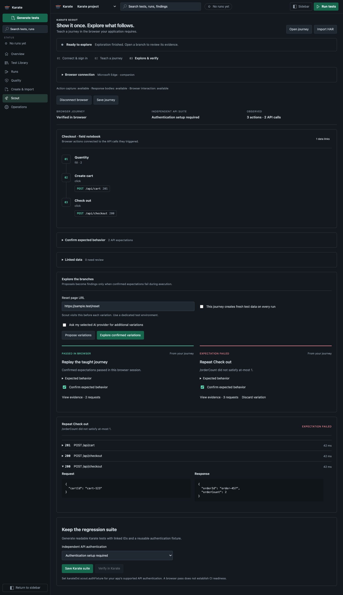

{kind=link}
Your browser. Your normal sign-in.
Open installed Chrome or Edge with a dedicated Scout profile, or pair the optional companion with an existing signed-in tab. Complete SSO and MFA before teaching.
Sign in normally, show Scout how your app works, and watch it build and test the journey. Teach in Chrome or Edge, explore the branches, and keep a readable Karate regression suite.

The sample checkout in Scout. Browser results, branch evidence, and independent API verification stay distinct. View the full journey ↗
New in 2.0.3
Scout connects what you do in the application to the API calls behind it, then helps you turn confirmed expectations into executed tests.
Open installed Chrome or Edge with a dedicated Scout profile, or pair the optional companion with an existing signed-in tab. Complete SSO and MFA before teaching.
See application actions and API calls together. Link cart IDs, order IDs, and other observed values across requests, and confirm ambiguous links before exploration.
Review bounded required-field, boundary, and repeat-operation variations. Confirm the expected behavior, prepare fresh data, then inspect the responses behind each executed assertion.
Generate readable Karate tests with dynamic data links and reusable setup references. Browser verification and independent Karate verification have separate results.
Pause for expired sign-in, report unavailable capture capabilities, and import approved HAR exports when live access is restricted. Company-managed SSO and passkeys require a pilot; browser policy still applies.
The workspace
The 2.0 workspace turns scattered commands into a connected system for everyday API quality work.
Browse scenarios with tags, ownership, lifecycle status, stability, source location, and Zephyr traceability—all backed by Git-friendly workspace data.
Run a feature, exact scenario, folder, tag set, or saved profile through standalone Karate, Maven, Gradle, or your configured runner.
Teach a live browser journey with Scout, or generate from OpenAPI, Confluence, Postman, HAR, GraphQL, Jira, and captured sessions. AI enhancement is optional.
Bring coverage gaps, specification changes, project health, flakiness, execution failures, and Bug Hunter results into one guarded queue.
Choose Copilot, another VS Code model provider, Claude API, or local Ollama. Efficient routing is the default; premium models remain an explicit choice.
Route CI repair work, publish outcomes to Zephyr Scale, expose MCP tools, learn shared styles, and report bugs with redacted diagnostics.
Try the sample shop
The local sample contains a deliberate duplicate-order defect. Teach one successful checkout, then confirm that repeating it must leave the order count at one.
Start teaching after sign-in. Change quantity, create a cart, and check out once.
Review the captured journey and confirm an order count of at most one for repeated checkout.
Reset the test data and run the variation. Inspect the response showing a duplicate order.
Save the linked suite and run it independently with supported authentication and setup.
No hosted Scout service is required. Optional AI proposals use your selected provider. HAR alone does not establish browser actions, reusable authentication, or verified tests.
Start testing
Open Karate Scout: Teach a Browser Journey from the Command Palette, then choose Try the sample shop. Follow the setup guide to connect your own application or an existing signed-in tab.